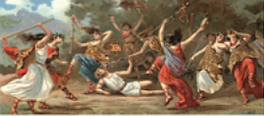
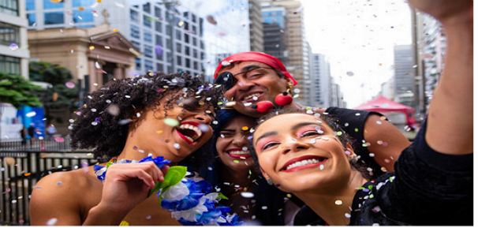
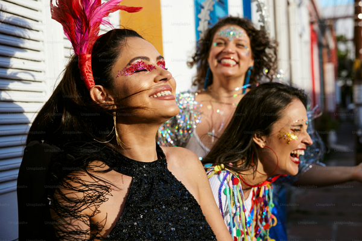

História do Carnaval
Tem sua origem na Antiguidade com festas aos deuses onde se permitia uma alteração na ordem social. Os escravos e servos assumiam os lugares dos senhores e a população aproveitava para se divertir.
Cidades como Veneza (Itália), Nice (França), Nova Orleans (EUA), Ilhas Canárias (Espanha), Oruro (Bolívia) e Barranquilla (Colômbia), também celebram a festa .
Na Babilônia, havia a comemoração das Saceias, onde era permitido que um prisioneiro assumisse a identidade do rei por alguns dias,
sendo morto ao fim da comemoração.
Já na Grécia Antiga, se comemorava a chegada da primavera onde estava permitido que toda população, participasse do evento.
Celebração semelhante ocorria no Império Romano, na Saturnália, quando as pessoas se mascaravam e passavam dias a brincar, comer e beber.

Mais sobre a origem do carnaval, clicando aqui.Alegria de um povo
O Carnaval é uma das datas mais esperadas do ano, um momento de celebração que combina alegria, música e criatividade. Mais do que uma festa, um símbolo de liberdade e alegria, Prepare-se para mergulhar na magia do Carnaval! Veremos os tipos de manifestaçôes do povo brasileiro.
O Carnaval é uma boa época pra ser feliz.
O Brasil é plural, com uma mistura de culturas que vai da Amazônia ao Sul, do Nordeste ao Centro-Oeste. O Carnaval é uma expressão dessa diversidade. As músicas, os ritmos e as danças que tomam as ruas durante esse período.
são um reflexo das origens africanas, indígenas e europeias que formam a base da nossa sociedade. Cada estado, cada cidade, tem seu próprio jeitinho de celebrar. No Rio de Janeiro, o Carnaval é sinônimo de samba e desfiles grandiosos no Sambódromo, enquanto em Salvador, a festa ganha contornos de axé e o famoso trio elétrico. Em Olinda, as ladeiras ganham vida com as marionetes e bonecos gigantes, enquanto o frevo e o maracatu fazem o ritmo pulsar no Recife.
Em cada canto do país, o Carnaval se molda de acordo com a cultura local, criando um cenário único e multifacetado.
É o que vamos abordar nbessa matéria, a diversidade contida nessa festa popular.

O Carnaval no contexto global
Embora o Carnaval seja uma tradição brasileira, também reverbera no cenário global. Cada vez mais, turistas de todas as partes do mundo viajam para o Brasil com o desejo de vivenciar essa experiência única. O Carnaval é essência do Brasil: calor humano, hospitalidade, música contagiante e uma alegria que transcende fronteiras. A globalização, fez com que o Carnaval se tornasse não apenas uma festa nacional, mas um símbolo de nossa cultura que circula pelo planeta.
